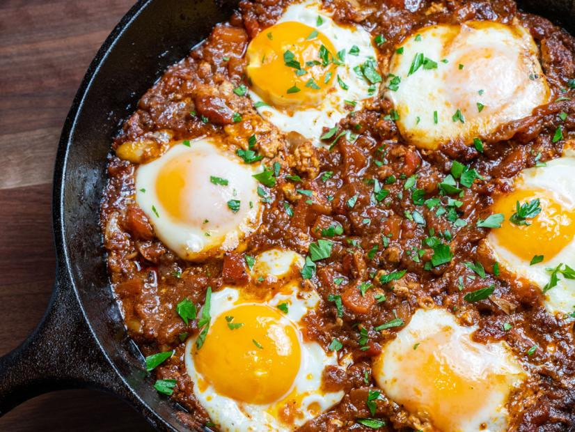

Shakshuka

Shakshuka is a classic North African and Middle Eastern dish and one that's eaten for breakfast or any meal of the day.
Ingredients:
- 2 red bell peppers
- 1/4 cup extra-virgin olive oil
- 3 large garlic cloves, thinly sliced
- 1 1/2 teaspoons kosher salt
- 3 tablespoons Urfa Biber Harissa, recipe follows
- 1 tablespoon dark brown sugar
- 2 teaspoons Quick Preserved Lemons, mashed, recipe follows
- 2 pounds beefsteak tomatoes, halved and seeded
- 6 large eggs
- Chopped flat-leaf parsley, for garnishing
Urfa Biber Harissa:
- 2 tablespoons cumin seed
- 1 tablespoon coriander seeds
- 1 teaspoon caraway seeds
- 1/4 cup extra-virgin olive oil
- 8 large garlic cloves, thinly sliced
- 1 medium onion, diced
- 1 tablespoon kosher salt
- 1 cup urfa biber (aka urfa pepper)
- 3 tablespoons tomato paste
- 1/4 cup red wine vinegar
- 4 lemons, scrubbed and dried, plus the juice of 1 lemon, if necessary
- 40 grams kosher salt
Special Equipment:
Special equipment: a 10-inch cast-iron skillet, food processor, 16-ounce canning jar
Directions
- Position an oven rack 5-inches from the top of oven and set the broiler to high.
- Cut the peppers in half lengthwise, discard the seeds, and place cut-side down on a sheet pan. Broil until the skins are completely charred, about 10 minutes, rotating the pan halfway through. (Or char the peppers over gas burners, turning often.)
- Transfer the peppers to a large bowl, cover tightly with plastic wrap and allow then to steam for 15 minutes, then rub the skins off under running water. Drain and roughly chop into half-inch squares.
- Place a 10-inch cast-iron skillet over medium heat for 2 minutes. Add the oil and heat until shimmering, or until it reaches 335 to 350 degrees F. Stir in the garlic and salt and cook until the garlic begins to brown, about 1 minute.
- Add the harissa, brown sugar and preserved lemons and cook, stirring vigorously, for 30 seconds. Follow with the peppers, then grate the tomatoes directly into the pan using the large holes of a box grater, discarding the remaining pieces of skin. Reduce the heat to medium-low and simmer for 20 minutes, stirring every 5 minutes.
- Meanwhile, bring a small pot of water to a boil and prepare an ice bath in a large bowl. Carefully lower the eggs (in their shells) into the boiling water and cook for 1 minute then dunk in the ice bath for 30 seconds. Remove to a dish towel.
- Create 6 divots in the stew with the back of a large spoon or ladle, making them deep enough to hold the eggs without pushing through to the bottom of the pan. Crack the par-cooked eggs into the divots. (I usually break them one by one into a custard cup to protect the yolk.) Cook over medium-low heat until the whites are just set but the yolks are still runny, about 12 minutes.
- Garnish with chopped parsley and serve immediately.
- Toast the cumin, coriander and caraway in a dry cast-iron skillet over medium heat until fragrant, about 3 minutes. Stir in the olive oil, garlic, onion and salt. Cook until the garlic begins to brown, about 2 minutes.
- Stir in the urfa biber and tomato paste and cook for 1 minute. Add the red wine vinegar and cook 2 minutes more.
- Transfer the mixture to a food processor fitted with a standard S-blade and process until smooth, scraping down the sides as needed. Store in a tightly sealed glass container in the refrigerator for up to 3 months.
- Trim the ends off the lemons. Slice each lemon into 8 wedges, removing any seeds as you go. Reserve as much of the juice as possible.
- Layer the lemon wedges in a wide-mouthed 16-ounce canning jar, covering each layer with salt. Pack the jar as tightly as possible, pressing down to release the lemons' juice as you go and leaving about 1/4 inch of headspace in the jar.
- Cover the wedges with the reserved lemon juice from the cutting board and the ends. If your lemons do not release a significant amount of juice, top off the jar with the juice of another lemon.
- Stash in the refrigerator for 4 days, then flip the jar over and age another 4 days before sampling. The peel should be nice and soft. Rinse before using.
- Expect peak flavor and texture after about a month. As long as they're kept refrigerated, preserved lemons should keep indefinitely.